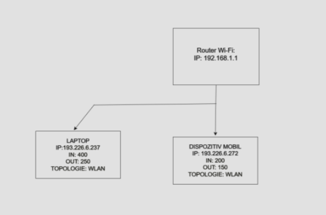
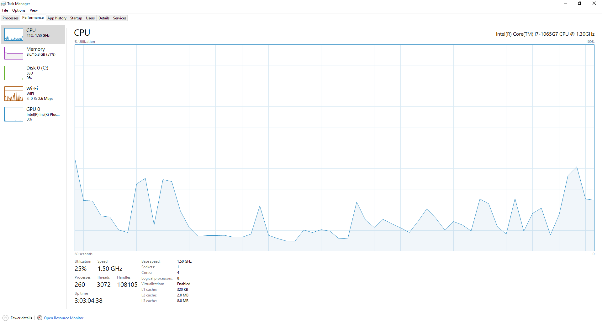
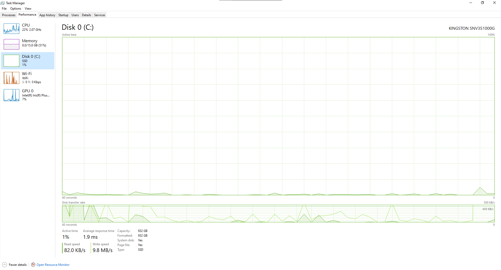
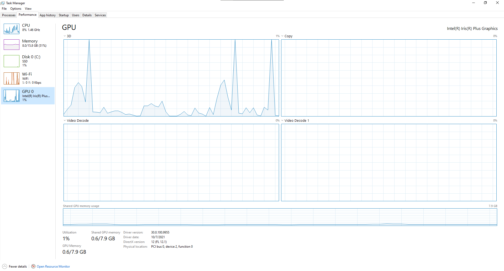
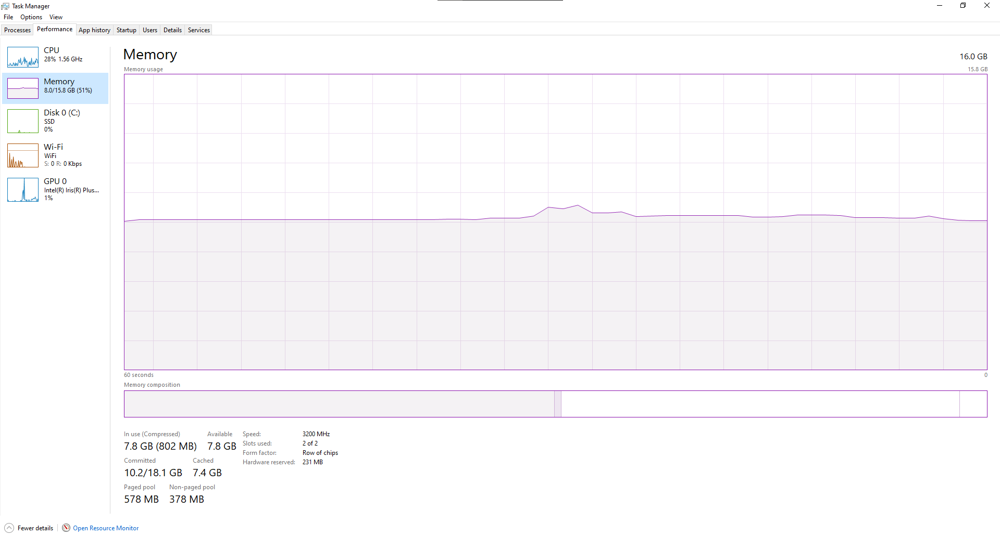
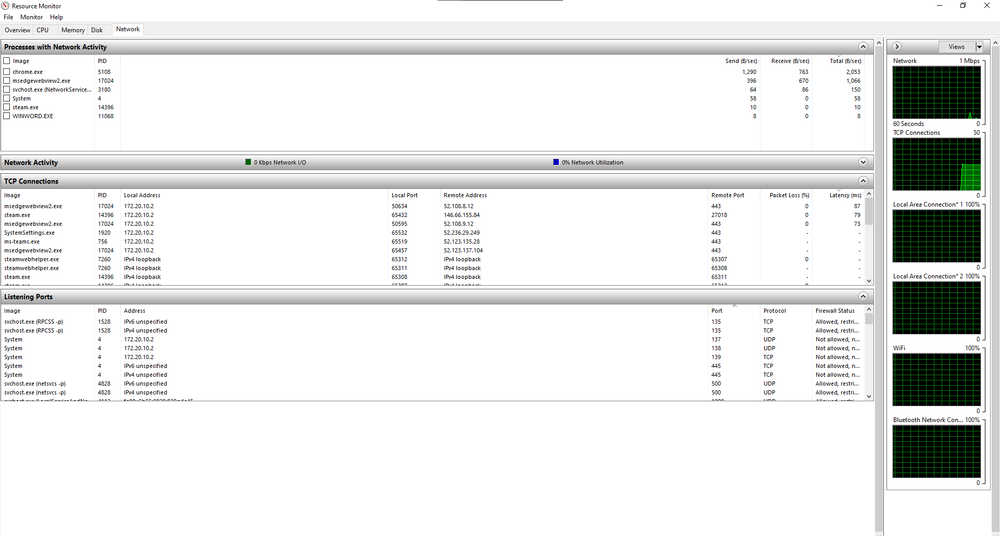
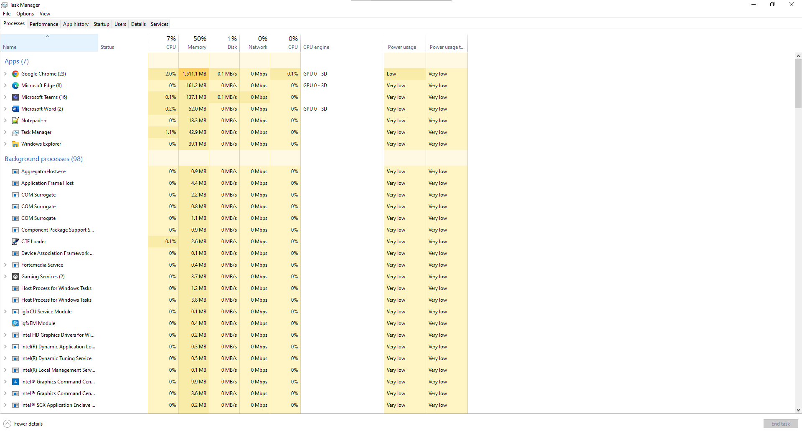
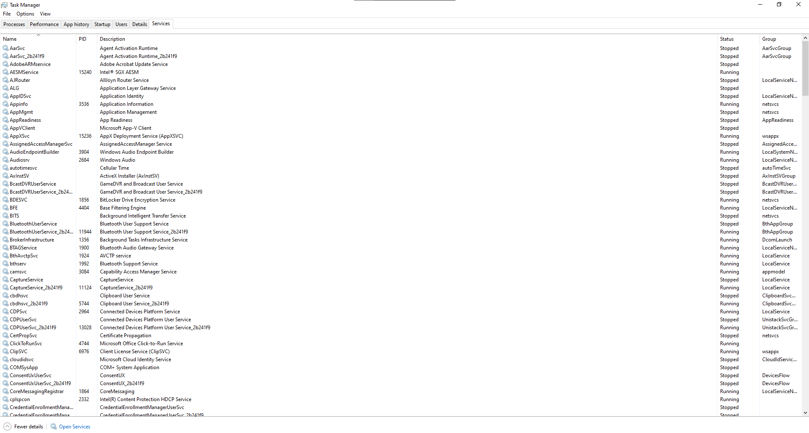
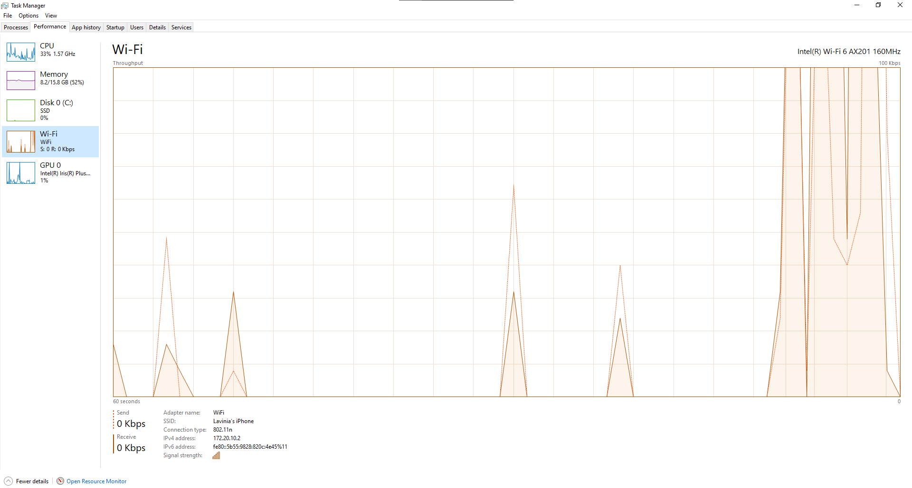

Structura rețelei și caracteristicile conexiunii

Caracteristicile conexiunii la rețea
- Adresa MAC: A4-B1-C1-3F-B5-ED
- Adresa IP: 172.20.10.2
- Debit la download: 10.2MB
- Debit la upload: 7.2MB
Monitorizare resurse








Specificații tehnice ale stației principale de lucru
| Denumire componentă |
Producător |
Parametri |
| Procesor |
Intel |
i7-12700K, 3.8GHz |
| Memorie RAM |
Corsair |
16GB DDR4 |
| Placă video |
NVIDIA |
RTX 3060, 12GB |
| SSD |
Samsung |
1TB NVMe |